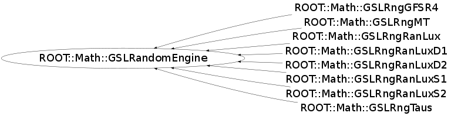

class ROOT::Math::GSLRandomEngine
GSLRandomEngine
Base class for all GSL random engines,
normally user instantiate the derived classes
which creates internally the generator.
The main GSL generators (see
<A HREF="http://www.gnu.org/software/gsl/manual/html_node/Random-number-generator-algorithms.html">
here</A>) are available as derived classes
In addition to generate uniform numbers it provides method for
generating numbers according to pre-defined distributions
using the GSL functions from
<A HREF="http://www.gnu.org/software/gsl/manual/html_node/Random-Number-Distributions.html">
GSL random number distributions</A>.
@ingroup Random
Function Members (Methods)
public:
| virtual | ~GSLRandomEngine() |
| unsigned int | Binomial(double p, unsigned int n) const |
| double | Cauchy(double a) const |
| double | ChiSquare(double nu) const |
| void | Dir2D(double& x, double& y) const |
| void | Dir3D(double& x, double& y, double& z) const |
| double | Exponential(double mu) const |
| double | FDist(double nu1, double nu2) const |
| double | Gamma(double a, double b) const |
| double | Gaussian(double sigma) const |
| void | Gaussian2D(double sigmaX, double sigmaY, double rho, double& x, double& y) const |
| double | GaussianRatio(double sigma) const |
| double | GaussianTail(double a, double sigma) const |
| double | GaussianZig(double sigma) const |
| ROOT::Math::GSLRandomEngine | GSLRandomEngine() |
| ROOT::Math::GSLRandomEngine | GSLRandomEngine(ROOT::Math::GSLRngWrapper* rng) |
| ROOT::Math::GSLRandomEngine | GSLRandomEngine(const ROOT::Math::GSLRandomEngine&) |
| void | Initialize() |
| double | Landau() const |
| double | LogNormal(double zeta, double sigma) const |
| vector<unsigned int> | Multinomial(unsigned int ntot, const vector<double>& p) const |
| string | Name() const |
| unsigned int | NegativeBinomial(double p, double n) const |
| double | operator()() const |
| ROOT::Math::GSLRandomEngine& | operator=(const ROOT::Math::GSLRandomEngine&) |
| unsigned int | Poisson(double mu) const |
| void | RandomArray(double* begin, double* end) const |
| unsigned int | RndmInt(unsigned int max) const |
| void | SetSeed(unsigned int seed) const |
| unsigned int | Size() const |
| double | tDist(double nu) const |
| void | Terminate() |
Class Charts
{kind=link}
{kind=link}
{kind=link}
{kind=link}

Function documentation
GSLRandomEngine()
default constructor. No creation of rng is done.
If then Initialize() is called an engine is created
based on default GSL type (MT)
GSLRandomEngine( GSLRngWrapper * rng)
create from an existing rng.
User manage the rng pointer which is then deleted olny by calling Terminate()
void Initialize()
initialize the generator
If no rng is present the default one based on Mersenne and Twister is created
unsigned int RndmInt(unsigned int max) const
Generate an integer number between [0,max-1] (including 0 and max-1)
if max is larger than available range of algorithm
an error message is printed and zero is returned
void RandomArray(double* begin, double* end) const
Generate an array of random numbers.
The iterators points to the random numbers
double Gaussian(double sigma) const
@name Random Distributions
Implemented using the
<A HREF="http://www.gnu.org/software/gsl/manual/html_node/Random-Number-Distributions.html">
GSL Random number Distributions</A>
@{
Gaussian distribution - default method is Box-Muller (polar method)
void Gaussian2D(double sigmaX, double sigmaY, double rho, double& x, double& y) const
Bivariate Gaussian distribution with correlation
void Dir3D(double& x, double& y, double& z) const
generate random numbers in a 3D sphere of radious 1
std::vector<unsigned int> Multinomial(unsigned int ntot, const vector<double>& p) const
Multinomial distribution
void SetType(ROOT::Math::GSLRngWrapper* r)
@} internal method used by the derived class to set the type of generators